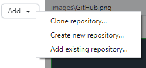
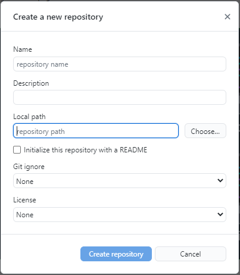
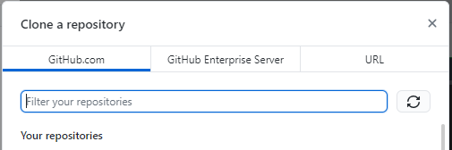
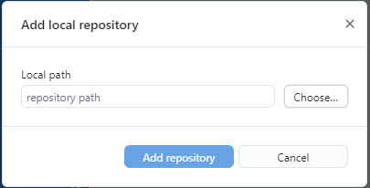
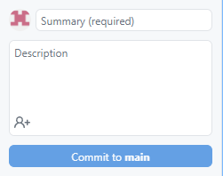
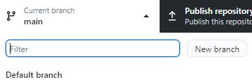
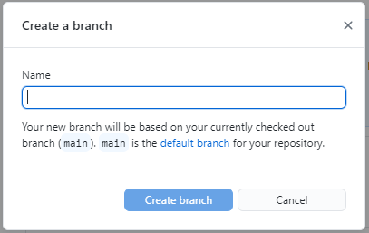
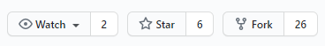
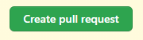
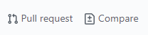

What is Git?
It is an open source version control software. Version control is a system that records changes to a file or set of files over time so that you can keep track of the activities you performed.
In Real life projects, multiple developers work parallelly. So they need a version control system like Git to make sure that there are no code conflicts between them.
Why do we need it?
- Git makes it easy to contribute to open source projects:
- To track changes in your code:
- To showcase your work
If you want to contribute to other's projects, you just fork(get a copy of) the project, make your changes, and then make a pull request to the project owner using GitHub's web interface. This way project owner can look into your changes and include these changes in his/her project.
When multiple people work on a project, it’s hard to keep track of the changes — who changed what, when, and where those files are stored. GitHub takes care of this problem by keeping track of all the changes that have been pushed to the repository.
Are you someone who wants to attract recruiters? GitHub is the best tool you can rely on for this. You will have a higher chance of being recruited if you have maintained a good github account.
Set up your GitHub account
- Create a GitHub account:
- Download and Install GitHub Desktop.

Git Repositories
A repository is a project that contains multiple files. This repository tracks all the changes made to files in your project, building a history over time.
You can do following actions with a repository.
- Create a new repository locally
- Clone your repository
- Create an existing repository
Create a local repository by filling all the details.
Cloning a GitHub repository creates a local copy of the remote repository. This allows you to make all of your changes locally rather than directly in the source files of the original repository.
If you have already created a repository, you can select this option and add the existing repository.
Publishing the Repository
After creating a Repository, you can publish this repository to the GitHub web interface.
Git commits
Commits are like a snapshot of your work and the changes you have made. It creates a history of every commit you make. This helps in keeping track of the changes you made to the project.
Push your changes to the main branch.
After commiting to the changes you have made to the project, you need to push the changes to the main branch.
Create a new branch
If you want to make a new feature but you are worried about making changes to the main project and spoiling it while implementing the feature. This is where git branches come in.
Click on the New Branch --> Give a name to the branch --> Create Branch.
 Create a Pull Request
If you want to contribute or collaborate with other projects, you need to follow these steps:
- Find a project you want to contribute to
- Fork it 
- Clone it to your local system
- Make a new branch
- Make your changes
- Push it back to your repository
- Click on the Compare button
- Click on Create pull request to open a new pull request 
After you push the changes you have made to the project, go to your repository on GitHub web interface, click on the Compare button.
